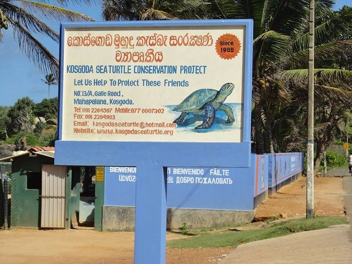
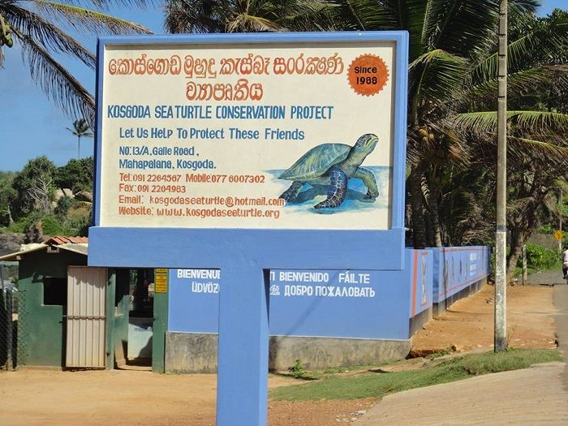
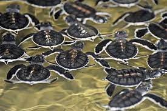
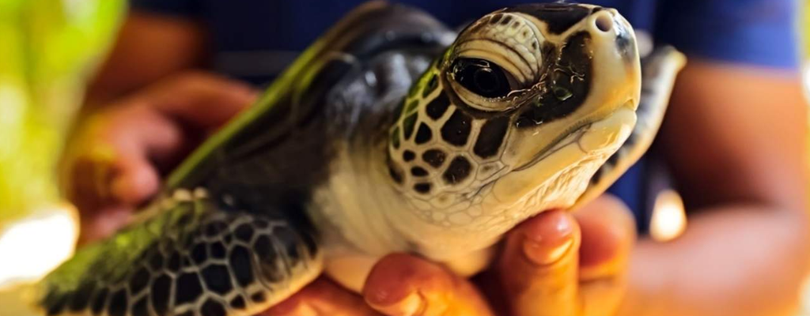
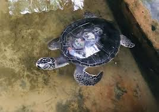
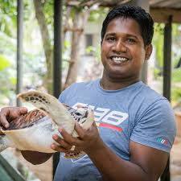
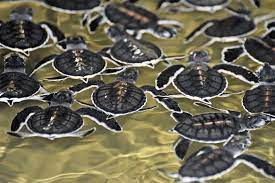
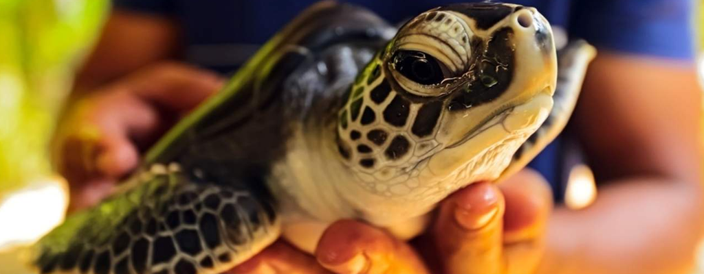
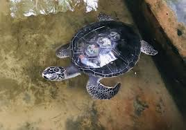
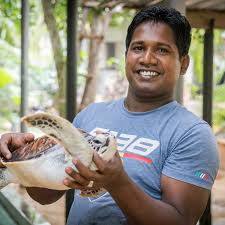

X
X
The Kosgoda Turtle Hatchery, situated in the coastal town of Kosgoda, Sri Lanka, is a renowned conservation center dedicated to the protection and preservation of sea turtles. Nestled along the picturesque shores, this hatchery serves as a haven for these magnificent creatures and plays a vital role in their survival. The Kosgoda Turtle Hatchery is a hub of conservation efforts, actively involved in rescuing and rehabilitating injured turtles, safeguarding nesting grounds, and raising awareness about the importance of turtle conservation. Through its commitment to research, education, and community engagement, the hatchery strives to ensure the long-term sustainability of sea turtles and their habitats, making it a significant player in the conservation landscape of Sri Lanka.
The Kosgoda Turtle Hatchery is at the forefront of sea turtle conservation, with a range of impactful efforts aimed at protecting these endangered species. The hatchery actively works to combat threats such as poaching, habitat loss, and pollution through its dedicated team of conservationists and volunteers. It plays a crucial role in rescuing injured or stranded turtles, providing them with necessary medical care and rehabilitation before releasing them back into the ocean. The hatchery also works tirelessly to protect and monitor nesting sites, ensuring that eggs are safely incubated and hatchlings have the best chance of survival. Moreover, the Kosgoda Turtle Hatchery conducts educational programs for locals and tourists alike, raising awareness about the importance of sea turtle conservation and advocating for sustainable practices. Through these concerted efforts, the hatchery strives to create a future where sea turtles thrive and their habitats are preserved for generations to come.
X
 

 






